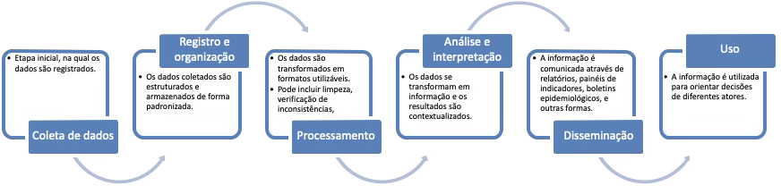

Módulo 1 | Aula 1
Introdução à Informação em Saúde no SUS
Informação para a saúde
A informação é um recurso básico para qualquer atividade humana e, como vimos, envolve o significado atribuído a um determinado dado por meio de convenções e representações (Eduardo, 1990). Em geral, a informação será a base para a tomada de decisões e o planejamento de ações e, posteriormente, para sua avaliação.
As principais fontes de dados utilizadas no campo da Saúde Pública são os Sistemas de Informação em Saúde. Contudo, considerando o conceito ampliado de Saúde, a informação se refere não apenas às informações geradas pelo setor Saúde, como os atendimentos prestados, mas a toda informação que contribua para o cuidado, o planejamento, a gestão, a organização, o monitoramento e a avaliação nos vários níveis que constituem o Sistema Único de Saúde. Assim, dados socioeconômicos, demográficos e ambientais, por exemplo, também são importantes para planejamento e gestão. Vale lembrar que diferentes fontes de dados serão abordadas nos próximos módulos.

Os Sistemas de Informação em Saúde
Durante a 5ª Conferência Nacional de Saúde, em 1975, foi identificada a "falta de informação adequada e mecanismos institucionais" que possibilitassem o conhecimento das necessidades da população; e foi recomendada "a instituição de mecanismos de integração da informação" (Conferência Nacional de Saúde, 1975, p. 22). Na ocasião, também ocorreu a 1ª Reunião Nacional sobre Sistemas de Informação de Saúde, durante a qual foi apresentado e aprovado o modelo único para a declaração de óbito, os fluxos a serem seguidos e os dados a serem computados no Sistema de Informações sobre Mortalidade (SIM) (Jorge; Laurenti; Gottlieb; 2009). A partir de então, foram criados alguns dos principais sistemas de informações de saúde.
Com o movimento da Reforma Sanitária e a consequente criação do Sistema Único de Saúde (SUS) pela Constituição Federal de 1988, o movimento pela integração dos serviços de saúde e dos sistemas de informação informatizados se acelerou. O reconhecimento da saúde como direito de todos e dever do Estado reforçou a necessidade de desenvolver ferramentas eficazes para a gestão nacional, incluindo bases de dados robustas e sistemas informatizados capazes de coletar, analisar e disseminar informações relevantes para todos os níveis de gestão, além de apoiar o controle e a participação social.
A descentralização dos SIS
Até a década de 1970, além de os Sistemas de Informação em Saúde (SIS) serem fragmentados e não integrados, os fluxos da produção de dados ocorriam de forma verticalizada e centralizada, com os municípios atuando apenas como coletores e produtores de dados, que iam do nível local para o nível central (Ministério da Saúde). Em meados da década de 1980, com o movimento da Reforma Sanitária e instituição do SUS, os SIS também passam por um processo de descentralização (Rezende; Soares; Reis, 2020).
As informações ganham caráter mais estratégico na formulação, implementação, avaliação e monitoramento das ações e políticas de Saúde. Nesse contexto, as secretarias municipais de saúde deixam de apenas coletar dados, passando a analisá-los e a utilizá-los nos processos de decisão, gestão e planejamento. Esse movimento não apenas fortaleceu a autonomia municipal, mas também melhorou significativamente a capacidade do sistema de Saúde de responder de forma eficaz às necessidades locais e regionais da população.
Posteriormente, a Lei n° 8.142/1990 definiu que a organização e a coordenação do sistema de informação de saúde são atribuições comuns da União, dos estados, do Distrito Federal e dos municípios. A mesma lei previu, em seu art. 47, que o Ministério da Saúde, em articulação com os níveis estaduais e municipais do SUS, organizaria, no prazo de dois anos, "um sistema nacional de informações em saúde, integrado em todo o território nacional, abrangendo questões epidemiológicas e de prestação de serviços". No ano seguinte, foi criado o Departamento de Informática do SUS (DataSUS), naquele momento com as competências de "especificar, desenvolver, implantar e operar sistemas de informações relativos às atividades finalísticas do SUS" (Brasil, 1991).
O Ministério da Saúde determinou, por meio da Portaria n° 3.847, de 25 de novembro de 1998, a necessidade do estabelecimento de um conjunto mínimo de padrões para a intercomunicação dos sistemas de informação e bases de dados em saúde (Risi Júnior, 2006). Naquele momento, eram diversos os desafios e implicações da fragmentação das informações para a Saúde disponíveis, pois existiam diferentes graus de cobertura e qualidade dos dados, com muitas inconsistências e falta de coordenação das informações (Brasil, 2009).
Apesar de diversas tentativas por meio do DataSUS, os diferentes SIS continuaram não integrados e apresentando dados duplicados e de difícil tratamento (Cavalcante; Pinheiro, 2011). Dessa forma, era difícil ter informações úteis e oportunas para subsidiar o planejamento e as decisões da gestão em diferentes níveis. Em 2002, o DataSUS foi transferido para a estrutura organizacional da Secretaria Executiva do Ministério da Saúde e, entre suas atribuições, estava "coordenar a implementação do sistema nacional de informação em saúde, nos termos da legislação vigente" (Brasil, 2002).
Em 2023, o DataSUS passou a integrar a Secretaria da Informação e Saúde Digital (SEIDIGI) do Ministério da Saúde (MS), com a responsabilidade de regulamentar e implementar iniciativas estratégicas para apoiar a informatização e a digitalização do SUS.
Dentre os principais marcos legais iniciais que orientaram a estruturação e o funcionamento do SUS e dos sistemas de informação em saúde, destaca-se ainda o Decreto n° 7.508/2011. Esse decreto regulamenta as diretrizes estabelecidas pela Lei n° 8.080/1990 para a organização do SUS, reforçando que, para cumprir exigências como avaliação, monitoramento e acompanhamento de indicadores - além de outras atribuições dos entes federativos -, a informação em Saúde e o desenvolvimento de sistemas informacionais são elementos essenciais e estratégicos.
Por muito tempo não houve uma estratégia de planejamento para todo o setor, e os sistemas foram sendo criados de acordo com necessidades específicas de diferentes áreas, ainda que com a previsão da instituição do Sistema Nacional de Informação em Saúde (SNIS). A partir de 2003, começou a ser idealizada a Política Nacional de Informática e Informação em Saúde (PNIIS), com contribuições de diferentes instituições acadêmicas, do Conselho Nacional de Secretários de Saúde (CONASS) e do Conselho Nacional de Secretários Municipais de Saúde (CONASEMS), e de realização de consulta pública (Fonseca, 2015). O histórico da PNIIS será detalhado na próxima aula.
Em 2020 foi criada a Rede Nacional de Dados em Saúde (RNDS), plataforma oficial de interoperabilidade do Ministério da Saúde. Ela foi criada com o objetivo de conectar diferentes sistemas de saúde, e estabelece a infraestrutura nacional para o compartilhamento seguro e padronizado de dados, garantindo mais eficiência na gestão da informação e aprimorando a qualidade dos serviços prestados à população. No Módulo 4, aprofundaremos esse tema.
As responsabilidades e a organização dos fluxos dos dados em Saúde
As responsabilidades pela coleta, registro e integração dos dados de saúde são compartilhadas entre os entes federativos - União, estados, Distrito Federal e municípios -, conforme estabelecido pela Lei n° 8.142/1990. Cada nível de gestão tem a responsabilidade de alimentar e manter atualizados os sistemas de informação. Em geral, os dados da produção assistencial, por exemplo, são coletados nas unidades e estabelecimentos de saúde, digitalizados (se necessário) e enviados aos sistemas de informação em nível local, que por sua vez consolidam essas informações em níveis estadual e nacional. Esse fluxo permite a análise integrada dos dados e a geração de análises e relatórios que subsidiam o planejamento e a gestão em Saúde.
Cabe ao DataSUS o gerenciamento, a guarda, a preservação e o acesso seguro aos dados dos SIS de base nacional. Além disso, cabe ao DataSUS a disseminação, que ocorre principalmente a partir da disponibilização de ferramentas de tabulação - como o Tabnet e o Tabwin - ou de painéis de indicadores. As características de cada SIS serão abordadas no Módulo 3.
Figura 1 - Etapas básicas do ciclo de informação em Saúde.

Competências do Departamento de Informação e Informática do Sistema Único de Saúde (Brasil, 2023):
Uso das informações em saúde
A etapa de uso das informações em Saúde é fundamental para transformar dados em conhecimento útil, orientando decisões práticas no sistema de saúde. Nesse momento, gestores, profissionais, equipes e a sociedade utilizam as análises e evidências produzidas para:
- Planejar ações de saúde.
- Definir prioridades.
- Implementar intervenções.
- Monitorar resultados.
- Exercer o controle social e a participação cidadã.
O uso adequado das informações contribui para:
- Melhorar a qualidade do cuidado oferecido à população.
- Otimizar o uso de recursos disponíveis.
- Fortalecer a vigilância epidemiológica.
- Apoiar a formulação de políticas públicas mais eficazes.
- Garantir transparência e estimular o controle social sobre as ações e recursos do sistema de saúde.
As informações devem estar oportunamente disponíveis, ou seja, devem ser acessíveis ou recuperáveis, quando necessário, dentro de um tempo de resposta adequado para subsidiar uma determinada decisão.
É essencial garantir que todo o processo de coleta, análise e interpretação dos dados resulte em ações concretas, promovendo a saúde da população, aprimorando o funcionamento dos serviços de Saúde e fortalecendo o controle social.
Computacionalmente, uma condição é uma expressão booleana, sendo seu resultado um valor lógico verdadeiro ou falso. Dessa forma, a expressão booleana é alcançada a partir da relação lógica entre dois elementos e um operador relacional. Existem os seguintes operadores relacionais conforme a tabela a seguir.
| Operador | Operação | Símbolo matemático |
|---|---|---|
| == | igualdade | = |
| > | maior que | > |
| < | menor que | < |
| != | diferente | ≠ |
| >= | maior ou igual | ≥ |
| <= | menor ou igual | ≤ |
Operadores relacionais
Utilizando-se esses operadores é possível criar condições, tal como comparar se duas notas são iguais, verificar se uma nota é maior ou igual à outra, ou se é menor ou igual a outra variável. Confira a seguir exemplos do uso dos operadores relacionais e suas respostas.
Sintaxe
// Operadores de comparação
a = 1
b = 2
a == b // a é igual a b? FALSO
a > b // a é maior que b? FALSO
b > a // b é maior que a? VERDADEIRO
a != b // a é diferente de b? VERDADEIRO
Podemos adicionar comentários no código utilizando símbolos como # ou //, dependendo da linguagem de programação. Comentários são trechos de texto que não são executados, servindo para explicar partes do código e torná-lo mais fácil de entender.
Um algoritmo pode ou não executar todas as linhas de seu código, dependendo das condições específicas que precisamos. Muitas vezes, é necessário controlar vários cenários diferentes, como executar um bloco de código quando uma condição é verdadeira e outro bloco quando a condição é falsa.
Para gerenciar essas situações, usamos estrutura de controle. Uma das estruturas mais básicas e importantes é a estrutura condicional que chamamos de SE, conhecida em inglês como IF.
Essa estrutura permite ao algoritmo tomar decisões com base em condições específicas. A estrutura básica do comando SE é a seguinte:
Sintaxe
SE (condição) {
bloco de código A
}
restante do código
Caso a condição seja falsa, o bloco de códigos A dentro das chaves não seria executado pelo computador e o algoritmo seguiria normalmente para o restante dos códigos fora do SE.
Vamos pensar agora em um caso prático: nosso código deve verificar se o resultado do teste de covid-19 foi positivo ou negativo, de modo que usaremos aqui uma variável chamada resultado, que tem as seguintes categorias: 1 para positivo, 3 para negativo.
Veja o exemplo:
Exemplo de aplicação
// Verificar resultado do teste de COVID-19
// resultado: 1 = positivo, 3 = negativo
SE (resultado == 1) {
"positivo"
}
SE (resultado == 3) {
"negativo"
}
Podemos deixar esse bloco de códigos acima mais simples, utilizando a condição chamada de SENÃO ou, em inglês ELSE, que pode ser usada quando na lógica do nosso código queremos que execute uma tarefa; caso o resultado do SE seja falso, a condição SENÃO não pode ser usada sozinha, somente junto com a condição SE.
Veja agora como fica o exemplo do código anterior com o uso do SENÃO. Observe que o SENÃO não precisa de uma condição, ele é executado diretamente caso a condicional SE resulte em falso. Logo, no nosso exemplo, se não é positivo, o resultado seria diretamente negativo.
Exemplo de aplicação
// Usando SE-SENÃO para garantir exclusividade
SE (resultado == 1) {
"positivo"
}
SENÃO {
"negativo"
}
Algumas linguagens de programação tratam de forma mais adequada quando precisamos utilizar múltiplos SE para tratar uma lógica. Vamos ver alguns exemplos.
Quando temos que tratar, por exemplo, uma variável chamada tipo, que é o tipo de teste de covid-19 de um dado que tem as seguintes categorias segundo o dicionário de dados 1- PCR/ 2 – Antígeno, e queremos em nosso dado criar os nomes e não os números conforme vêm no dado original, então podemos utilizar SE e SENÃO como vimos anteriormente, ou podemos usar a condição SENÃO SE.
Exemplo de aplicação
// SE aninhado (com indentação excessiva)
// tipo: 1 = PCR, 2 = Antígeno
SE (tipo == 1) {
"PCR"
}
SENÃO {
SE (tipo == 2) {
"Antígeno"
}
SENÃO {
""
}
}
Entretanto, podemos utilizar uma solução mais interessante para esse problema, SENÃO SE. Essa condicional permite utilizar um SENÃO em conjunto com o SE, evitando criar mais níveis de deslocamento desnecessários à direita. Observe que o código a seguir tem o mesmo resultado do anterior, porém tem uma escrita mais simples.
Exemplo de aplicação
// SENÃO SE (código mais limpo e legível)
// tipo: 1 = PCR, 2 = Antígeno
SE (tipo == 1) {
"PCR"
}
SENÃO SE (tipo == 2) {
"Antígeno"
}
SENÃO {
""
}
Operadores lógicos
Até agora utilizamos apenas condicionais simples, com uma única condição. No entanto, é comum que nossos algoritmos se tornem mais sofisticados, exigindo duas ou mais condições. Para isso, precisamos agrupar as operações lógicas, e é aí que entram os operadores lógicos. Vamos explorar os seguintes operadores:
| Operador | Operação |
|---|---|
| & | E (AND) |
| | | OU (OR) |
| ! | NÃO (NOT) |
Os operadores lógicos seguem regras baseadas nas tabelas-Verdade.
Nesse contexto, temos operadores unários, como o operador de negação (NOT, "Não" em português), que utiliza apenas um operando. Já os operadores binários, como | (OR, "Ou" em português) e & (AND, "E" em português), utilizam dois operandos.
Tabela-verdade do operador NÃO (NOT), este operador inverte o valor lógico..
| Entrada | Operador | Saída |
|---|---|---|
| V | NOT | F |
| F | NOT | V |
O operador OU (OR) possui a seguinte tabela-verdade, lembrando que ele é um operador binário. Esse operador retorna VERDADEIRO se pelo menos um dos valores for verdadeiro.
| Entrada A | Operador | Entrada B | Saída |
|---|---|---|---|
| V | OR | V | V |
| V | OR | F | V |
| F | OR | V | V |
| F | OR | F | F |
O operador E (AND) possui a seguinte tabela-verdade, lembrando que ele é um operador binário. Esse operador retorna VERDADEIRO somente se ambos os valores de entrada forem verdadeiros.
| Entrada A | Operador | Entrada B | Saída |
|---|---|---|---|
| V | AND | V | V |
| V | AND | F | F |
| F | AND | V | F |
| F | AND | F | F |
Exemplo de aplicação
// Operador E (AND) - todas as condições devem ser verdadeiras
média = 7
falta = 4
SE (média >= 7 & falta <= 3) {
Aprovado
}
SENÃO {
Reprovado
}
// Resultado: Reprovado (falta não atende)
No exemplo anterior utilizamos operadores relacionais e operadores lógicos. Usamos duas condições: uma verifica se a média é maior ou igual a um valor, e a outra verifica se as faltas são menores ou iguais a três. Observe que, para ser aprovado, ao usar o operador "&" (E), ambas as condições devem ser VERDADEIRAS, conforme a tabela-verdade.
Exemplo de aplicação
// Operador OU (OR) - pelo menos uma condição deve ser verdadeira
média = 7
falta = 4
SE (média >= 7 | falta <= 3) {
Aprovado
}
SENÃO {
Reprovado
}
// Resultado: Aprovado (média atende)
Já nesse novo exemplo, usando-se o operador OU "|", conforme a tabela-verdade, basta que uma das condições seja VERDADEIRA para o resultado ser VERDADEIRO. Assim, se o aluno tiver média maior ou igual a 7 OU 3 ou menos faltas, ele será aprovado.